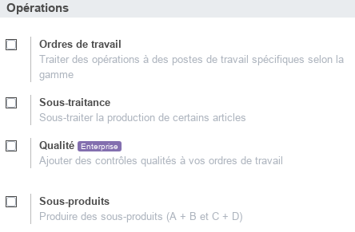
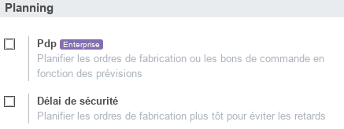
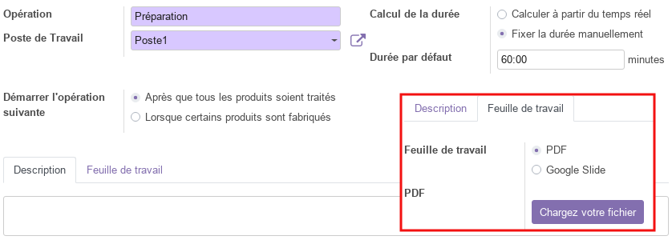
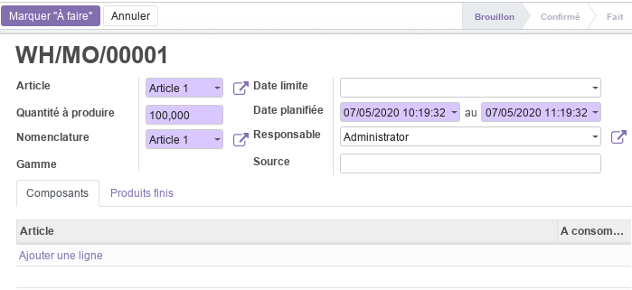

Module Fabrication¶
Ce document illustre les différentes fonctionnalités du module Fabrication d’odoo 13 community.
Présentation du module¶
Ce module est destiné à la gestion des opérations de production. Il permet :
de gérer les nomenclatures, les itinéraires, les feuille de travail, les routes et les règles d’approvisionnement.
d’afficher des feuilles de travail et des alertes de qualité aux travailleurs pendant les opérations.

Configuration (admin)¶
Cette section, réservée aux administrateurs et Gestionnaires de la fabrication, permet de définir les paramètres généraux du module.

L’option Ordres de travail active de nouvelles fonctionnalités permettant de gérer des opérations de fabrication qui devraient se suivre au sein des postes de travail afin de réaliser l’article. Elles sont attachées à des nomenclatures des définissent les composants requis.
L’option Sous-traitance permet aux gestionnaires de la fabrication de faire appel à la sous-traitance.
L’option Sous-produits permet d’ajouter des produits finis à des nomeclature de telle manière à obtenir A + B = C + D (comportement normal A + B = C).

L’option Délai de sécurité permet de planifier les ordres de fabrication plus tôt pour éviter les retards.
Données de base¶
Articles¶
Cette section permet de consulter les articles gérés par l’entreprise et pouvant être vendus et/ou achetés. Pour plus d’informations, consulter le module Stock / Article.
Il importe de noter que pour gérer la fabrication d’un produit il est indispensable de cocher la case Produire dans les paramètres Stock de l’article correspondant.

Nomenclatures¶
Les nomenclatures permettent de gérer les composants à partir desquels un article est fabriquer. Dans le cas où l’option Ordre de travail est activé, il est aussi possible d’attacher la gamme liée à l’article.

Il importe de noter que les composants sont aussi des articles dont les informations doivent être définis. Ils peuvent être achetés ou même produits à leur tour.
Pour chaque nomenclature, on peut analyser la structure de coût en lançant la commande Structure & coûts.
Gammes¶
Dans le cas où l’option Ordre de travail est activé, le Gestionnaire de la fabrication à la possiblité de définir des gammes qui seront par la suite liées aux articles produits par l’entreprise.

En effet, les gammes représentent l’enchainement détaillée des tâches entre les différents postes de travail. Ainsi, pour chaque opération de facbrication, on définis sont intitulé, le poste de travail correspondant, la durrée, le mode de démarrage, la description et on peut même ajouter un manuel (PDF, Slide) qui sera affiché sur le poste de l’opérateur qui effectue l’opération.

Pour chaque gamme, on peut faire une analyse du temps en lançant la commande Analyse de temps.
Postes de charges¶
Les postes de charges représentent les lieux physiques où les opérations sont réalisées (ex : atelier). Pour ces postes de charge une panoplie de paramètres est disponible, tel que les heures de travail par semaine, le rendement temporel, la capacité, le coût horaire, …

Pour chaque gamme, un ensemble d’analyses sont disponibles tel que : TRS (%) (Taux de Rendement Synthétique), Perdu (Heures), Charge (Minutes), Performance (%).
Opérations¶
Ordres de fabrication¶
Les ordres de fabrication représentent l’enregistrement principal des opérations de fabrication. Il comportent les informations suivantes : l’article concerné, la quantité à produire, la nomenclature à utiliser, les dates, le responsable, la source et les composants.

Cet ordre de fabrication, imprimable avec la commande _Imprimer/Ordre de fabrication, progresse par plusieurs état qui sont : Brouillon, Confirmé, Planifié et Fait.
En effet, une fois définis, l’ordre de fabrication peut être mis en file d’attente par la commande Marquer à faire qui fait passer sont état au stade de Confirmé.
A partir de là, le resposnable de la fabrication peut à tout moment planifier la fabrication avec la commande Plan, ce qui fait passer l’ordre de fabrication au stade de Planifié et crée automatiquement les ordres de travail pour chaque poste de charge.
Une fois que tous les travaux sont marqués comme fait au niveau des postes de charge, l’ordre de fabrication peut être Marqué comme fait et la quantité en stock est automatiquement mise à jour.

Ordres de travail¶
Cette section donne accès à la liste de tous les ordres de travail enregistrés dans odoo avec leurs états : En attente, Planifié, Fait, Annulé.
Commandes de deconstruction¶
Cette section permet de gérer les commandes de deconstruction. Ces dernières représentent par exemple des opérations de démontage de l’article qui sera supprimé de l’inventaire et ses composants seront réapprovisionnés en conséquence.

Cet Commandes de deconstruction, progresse par plusieurs état qui sont : Brouillon et Fait.
Une fois définis, la commande Deconstruction permet de lancer l’opération et de mettre à jour le stock automatiquement.
Ordres de mise au rebut¶
Cette section permet de gérer les mises en rebut. Ces dernières représentent des produits défecteux et dont la qualité ne répond pas aux exigences du client.

Ces ordres de mise en rebut, progressent par plusieurs état qui sont : Brouillon et Fait.
Une fois définis, la commande Valider permet de lancer l’opération de mise en rebut et de mettre à jour le stock automatiquement.
Vue d’ensemble¶
La vue d’ensemble donne accès un tableau de bord global des postes de charge permettant de visualiser de manière synthétique l’état des travaux au niveau de chaque poste (stock, en cours) et donne aussi des indications sur les performances et les problèmes.
Analyse¶
La partie analyse permet aux Gestionnaires de la fabrication de visualiser des vues synthétiques de la situation des ordres de fabrication, des ordres de travail et du taux de rendrement synthétique sous différentes formes : tableau croisé, graphes.
Plus de détails¶
Pour la collaboration sur les formulaires de ce module, consulter la fonctionnalité conversations.